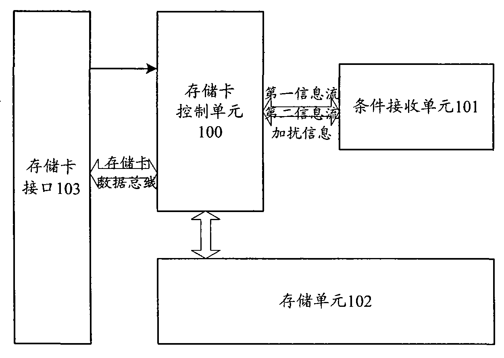

发明名称--一种存储卡
| 申请号 | CN200810105962.8 | 申请日 | 2008.05.06 | ||
| 公开（公告）号 | CN101267639B | 公开（公告）日 | 2011.01.26 | ||
| IPC分类号 | H04N7/16 | 申请（专利权）人 | 普天信息技术研究院有限公司; | ||
| 发明人 | 姜涌;曹会扬;王晨阳;廖剑;张海英;陶雄强;陈庆芳; | 优先权号 |
摘要:
本发明公开了一种存储卡，通过将条件接收单元作为存储卡的一个组成部分，实现了在移动终端通过SD/MMC等通用存储卡接口完成条件接收，达到了移动终端数字电视业务进行机卡分离的条件接收，方便了移动终端数字电视业务的开展，大大降低了移动终端如手机的改造成本。同时本发明还公开了一种存储卡实现条件接收的方法，实现了移动终端数字电视业务，节约了成本。
摘要附图:
